Melbourne
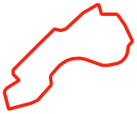
Albert Park Grand Prix Circuit
© OpenStreetMap contributors · ODbL-1.0
23 circuits. One season.
The corners, straights and silhouettes that make each weekend its own.

Albert Park Grand Prix Circuit
© OpenStreetMap contributors · ODbL-1.0
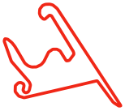
Shanghai International Circuit
© OpenStreetMap contributors · ODbL-1.0
Suzuka Circuit
© OpenStreetMap contributors · ODbL-1.0
Miami International Autodrome
© Tomislav Bacinger · MIT
Circuit Gilles-Villeneuve
© OpenStreetMap contributors · ODbL-1.0
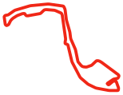
Circuit de Monaco
© Tomislav Bacinger · MIT
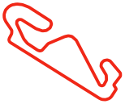
Circuit de Barcelona-Catalunya
© OpenStreetMap contributors · ODbL-1.0
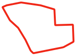
Red Bull Ring
© OpenStreetMap contributors · ODbL-1.0
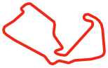
Silverstone Circuit
© OpenStreetMap contributors · ODbL-1.0
Circuit de Spa-Francorchamps
© OpenStreetMap contributors · ODbL-1.0
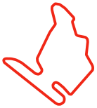
Hungaroring
© Tomislav Bacinger · MIT
Circuit Zandvoort
© Tomislav Bacinger · MIT
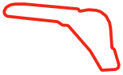
Autodromo Nazionale Monza
© OpenStreetMap contributors · ODbL-1.0
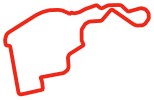
Madring
© Tomislav Bacinger · MIT
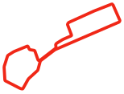
Baku City Circuit
© Tomislav Bacinger · MIT
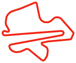
Sepang International Circuit
© Tomislav Bacinger · MIT
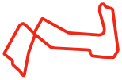
Marina Bay Street Circuit
© OpenStreetMap contributors · ODbL-1.0
Circuit of The Americas
© OpenStreetMap contributors · ODbL-1.0
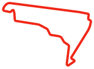
Autódromo Hermanos Rodríguez
© OpenStreetMap contributors · ODbL-1.0
Autódromo José Carlos Pace
© OpenStreetMap contributors · ODbL-1.0
Las Vegas Strip Circuit
© OpenStreetMap contributors · ODbL-1.0
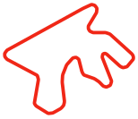
Lusail International Circuit
© OpenStreetMap contributors · ODbL-1.0
Yas Marina Circuit
© Tomislav Bacinger · MIT
These independently drawn track layouts use geographic course coordinates, as simplified illustrations. Proportions are preserved; some layouts are rotated to fit.
Map data from © OpenStreetMap contributors is available under the Open Database License (ODbL 1.0). Additional circuit coordinates: © Tomislav Bacinger, used under the MIT license. Source coordinates are available for every circuit above.